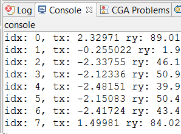

print operation
print(value)
value float bool string float[] bool[] string[] Value (or variable / shape attribute) to print.
Prints the passed variable to the console.
Related
Examples
Printing some stuff

Lot-->
extrude(16)
split(y) { 2 : r(scopeCenter, 0, rand(90), 0)
print("idx: " + split.index +
", tx = " + scope.tx +
" ry = " + scope.ry)
X. }*
The rule above prints some information about the split nodes, see the screenshot on the left.